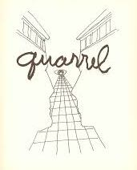

Active Co-Emergence — The Language in the Time of Attention
spaceform — Critical Research Space
Perspectiva Naturalis
The Western Organization of Vision
Part of the research sequence — Activation
Every era organizes what can be seen, recognized, and believed.
Vision proceeds in a conditioned way. It is shaped by images, architecture, rituals, technologies, and symbolic models.
What appears natural is often the result of a long historical construction.
Western art shows this transformation with particular clarity. Not only because it represents the world, but because it progressively changes the conditions through which the world becomes visible.
In Byzantine art, figures emerge against golden, frontal backgrounds, detached from realistic physical space. The gold background removes environmental and everyday references. The icon functions as a symbolic presence.
At this stage, the distance between image and world is still preserved.
Eastern and Western Christianity gradually develop different attitudes toward representation.
In Eastern Christianity, the sacred tends to retain a transcendent, hieratic dimension, distant from everyday reality. Here the image is not meant to produce psychological identification, but to open symbolic access to the divine.
Western Christianity instead evolves toward a more embodied relation to faith. The body of Christ, pain, suffering, and emotional participation gradually become central.
The believer must not only contemplate the mystery. He must pass through it emotionally.
This transformation also coincides with social changes.
Between the twelfth and thirteenth centuries, Italian feudal society remained largely rural and hierarchical, organized around land, lordship, and religious orders. Yet within this balance, new forms of urban life, circulation, and exchange were already beginning to emerge.
The expansion of communes, mercantile cities, and maritime routes gradually changes the relation between body, space, and collective life. Medieval cities become environments crossed by markets, processions, pilgrimages, public preaching, and religious performances.
Religious experience progressively leaves monastic space and moves through the city.
Medieval religious theater also takes part in this transformation. Sacred performances introduce movement, dramatization, and emotional involvement. Biblical stories are staged publicly. The believer witnesses events involving bodies, space, sound, and collective participation.
Medieval processions function in much the same way. They move through the city, organize collective movement, synchronize bodies and attention. Urban space itself becomes part of religious experience. They are not simple devotional rituals.
It is in this context that Francesco d'Assisi emerges.
What Francis introduces is not only a spiritual reform. He changes the relation between religious experience, the body, and visibility.
His life becomes a public gesture.
He moves through cities and squares, stages poverty, publicly renounces his father’s wealth, lives suffering as an embodied experience.
The Christian message is not only preached, but exposed through the body.
In this sense, his actions possess a performative dimension. Not in the contemporary sense of artistic performance, but as the transformation of existence into a shared and visible experience. Francis does not simply construct theological discourse.
He creates situations capable of activating emotional identification.
The saint understands that abstract contemplation is no longer enough. The sacred must become perceptible, traversable, almost physically lived.
It is here that representation slowly begins to change.
The nativity scene at Greccio represents one of the most significant moments of this passage. Francis does not simply want to recount the birth of Christ.
He wants to make it experientially present.
For this reason, he uses real animals, a concrete space, collective presence, a natural environment, and a physical reconstruction of the sacred event. The birth of Christ is reconstructed within the community. The believer no longer contemplates only a distant image, but enters the scene emotionally.
Enters into relation.
Representation thus begins to produce experience.
Greccio can be understood as an early form of experiential reconstruction of the sacred. Not yet modern theater, but already an intentional organization of participation.
The organization of experience here does not depend on technology, but on the deliberate construction of a situation.
The scene is consciously organized to produce presence and involvement. The believer knows he stands before a reconstruction, yet precisely through that reconstruction can move perceptually closer to the religious event.
Representation gradually stops functioning only as symbol and begins to operate as an experiential environment.
In this sense, Greccio anticipates something that will pass through much of Western visual culture: immersion, participation, shared experience, the perceptual construction of the credible.
The problem is no longer only to show an event, but to make it present.
It is within this transformation that Giotto becomes understandable. He does not suddenly emerge as an isolated innovator.
He is the result of a spiritual, urban, and perceptual transformation already underway. The new centrality of the body, emotion, and shared experience gradually changes the function of the image as well.
Giotto begins to do pictorially what Francis had already understood experientially: construct presence.
His work introduces a new perceptual organization of figurative space. His figures begin to occupy believable environments. They possess weight, gravity, direction. Gazes construct relations within the scene. Architectures suggest spatial continuity. Pain, fear, and expectation become legible through posture and bodily tension.
The image no longer merely indicates a sacred event. It begins to produce a sense of presence.
Animals also take on a different function. They participate in the same experiential space as human figures. Bodies, environment, architecture, and relations begin to converge within the same visual continuity. They cease to function as symbolic objects.
His pictorial narrative introduces tridimensionality, unlike Byzantine art, which flattens symbols and forms, distributing them orthogonally across the surface.
Giotto does not yet possess a unified mathematical perspective. In his work, space remains unstable and often irregular, yet the problem of perceptual credibility has now opened. Perception itself has shifted.
The Renaissance will organize this transformation theoretically and mathematically.
With Brunelleschi, central linear perspective emerges as a new organization of space.
As is well known, space is constructed around a single stable point of view. Perspective lines converge toward a vanishing point that presupposes a precise observer.
The represented world appears coherent only from the position of the eye that observes it.

Centuries later, in Man Ray, the relation seems almost reversed. Vision no longer merely observes the world, but appears as the structure that generates it. In Renaissance perspective, space organizes vision; here vision produces space. The perspectival grid no longer constructs realistic continuity as it did in the Renaissance, but exposes the process through which space takes shape within vision.
The Renaissance organization of vision nevertheless remained foundational for centuries. Leon Battista Alberti, in De pictura, transforms these experiments into a coherent theoretical system.
Perspective is no longer only a pictorial technique, but a rational method for organizing visible space.
It is here that what will become the modern spectator slowly emerges.
In medieval imagery, the believer contemplates the sacred without occupying a single stable center within the scene. In particular, the Byzantine icon concentrates attention on the symbolic presence of the figure more than on the construction of a coherent and shareable space. The image guides religious contemplation rather than organizing space around the spectator’s gaze.
With central perspective, the situation changes.
The spectator becomes the operational center through which space acquires coherence.
Thus the modern spectator is born: separated from the scene, placed frontally, stable, measurer of space, guarantor of visual coherence.
Perspective therefore does not only produce more realistic images. It produces a new perceptual position.
Reality begins to present itself as homogeneous space: observable, measurable, geometrically translatable.
Knowledge also changes structure. Vision, truth, and rationality progressively begin to converge. The Enlightenment will radicalize this transformation.
What emerges in the Renaissance as a perspectival organization of space later becomes a broader model of knowledge. The human subject assumes the role of foundation of knowledge. Reason is considered capable of ordering the world, verifying it, classifying it, understanding it.
The perspectival observer thus anticipates the Enlightenment subject. The issue no longer concerns painting alone, but the very way Western modernity conceives the relation between human beings and reality.
At the same time, the study of vision itself progressively becomes more systematic. The formation of images through a small aperture — the pinhole — was already known in antiquity, from Ancient China to Aristotle.
Yet it is Ibn al-Haytham (Alhazen), working within the scientific culture of the medieval Islamic world, who in the Book of Optics studies the phenomenon in relation to vision, the propagation of light, and the optical processes through which images are perceived.
Light gradually begins to be understood as a perceptual structure as well, not only as a natural or symbolic phenomenon.
With the Renaissance, optical studies progressively intersect with artistic representation.
In Magiae Naturalis, Giambattista della Porta describes the Renaissance camera obscura for the first time as a technical aid for painters.
The camera obscura opens toward a new function.
It no longer serves only astronomical observation or optical studies of light and vision. It also becomes an operational tool of representation. Optical mediation enters directly into artistic practice. The image no longer depends exclusively on direct observation or manual construction.
Light begins to participate directly in the construction of the image.
The problem of the relation between human perception and technical mediation returns. Devices change, yet the tensions remain the same.
Once the camera obscura enters artistic research, it begins to occupy an ambiguous position between technical instrument and perceptual artifice.
If the optical device participates in constructing the visible, what role remains for the artist?
Technology appears capable of facilitating, automating, or even replacing part of human mimetic ability. The issue does not concern technical skill alone.
It concerns perceptual delegation. The relation between perception and mediation.
The image no longer emerges exclusively from the artist’s gaze and hand. It no longer comes only from isolated imagination or natural vision. The imagined image can now be suggested by the technology of the camera obscura.
A device intervenes in the construction of vision.
The camera obscura does not replace human perception, but helps displace it.
It shows that seeing can also be organized, projected, and constructed through instruments. Perception no longer depends solely on the human eye, but also on devices capable of directing the construction of the visible.
Photography will carry this process further. Light no longer constructs only the appearance of reality. It directly and permanently impresses its trace.
Photography preserves a physical trace of the referent, and for this reason is often experienced as immediate access to reality. Yet this continuity also tends to make the role of the device less visible. Framing, selection, vision, and technical image construction progressively recede into the background. Photography does not merely record the world. Above all, it contributes to organizing the way reality appears and is perceived.
Every visual organization tends to naturalize its own devices. Every perceptual device organizes the way reality is perceived without ever fully coinciding with it.
What initially appears artificial or technological can gradually become a shared perceptual environment. Every civilization eventually inhabits its own perceptual devices until their original artificiality is forgotten.
Renaissance perspective appears spontaneous today only because the Western eye has been trained for centuries to read space through that structure. The camera obscura as well, initially perceived as an ambiguous artifice capable of intervening in image construction, gradually becomes assimilated into the normality of representation.
Technology does not remain external to perception.
It progressively becomes environment.
Paradoxically, it is precisely photography that slowly destabilizes the perceptual stability constructed by the Renaissance.
For centuries, central perspective had trained the Western eye to read the world as a stable and coherent space. Reality seemed arranged before vision according to readable and controllable geometric relations. The spectator occupied a stable position.
By the time photography emerges, this perceptual habit has already been deeply internalized.
The new technology is initially perceived as a possible confirmation of that vision: an even more precise, automatic, objective registration of reality through light, optics, and geometry.
The implicit expectation is that the machine will return a stable, coherent, governable world according to the visual order already consolidated by perspectival tradition.
But photography gradually reveals something else as well.
In early photographs, abrupt cuts, fragments, blurs, distortions, suspended moments begin to emerge. The visible no longer appears as perfectly stable continuity, but as a partial view of reality. The machine records something classical perspective tended to neutralize: perception never fully coincides with the geometry of space.
Photography does not break perspective from the outside.It slowly cracks its certainty from within the same optical structure. The image reveals that seeing contains instability, contingency, and partiality.
Monet perceives this transformation with particular clarity. The series devoted to Rouen Cathedral, haystacks, and water lilies show that the world never appears identical to itself. Light changes. Reflections change. Atmospheric conditions and chromatic intensities shift. The same subject continuously transforms before the eye.
For Monet, perception is not fixed because reality itself varies within the time of light.
The cathedral no longer possesses a definitive appearance. Every hour of the day alters contour, depth, and chromatic density. Matter itself seems almost to dissolve into atmospheric variation. The image no longer records only the object, but the changing relation between vision, light, and time.
With Cézanne, the problem changes.
It no longer concerns only the changing appearance of the world, but the very way vision constructs perceived reality.
Cézanne also returns to the same subjects — Sainte-Victoire, still lifes, bathers — yet his work does not simply register atmospheric variation. Cézanne works on the perceptual structure of space.
Renaissance perspective had constructed an ideal gaze. But the human eye does not function this way. It moves continuously. It passes across things. Corrects itself. Returns. Reconstructs spatial relations through time.
Cézanne begins to paint precisely this movement of vision.
For this reason, tables tilt slightly in his paintings, objects seem to slide, perspectives fail to fully coincide. Variations of viewpoint coexist within the same image.
Cézanne reveals something Western painting had long subordinated: we do not perceive the world as perfectly stable and immediately unified space.
Perception requires time.
The image does not emerge in an absolute instant.
It is progressively constructed through relations between body, memory, movement, and vision.
Monet shows that the world changes continuously while we observe it. Cézanne shows that vision itself changes while it attempts to organize the world.
It is here that the centrality of the perspectival spectator truly begins to break apart.
For centuries, the Western eye had been trained to seek a stable center of vision. With Cézanne, however, that certainty begins to collapse. The image no longer offers a definitive point from which space can be completely masteredce.
The centrality of the perspectival spectator gradually begins to dissolve.
The destabilization of perceptual certainty continues through modern visual culture.
Artificial intelligence enters into a new transformation in the relation between perception and the construction of the credible.
Like earlier devices, it does not intervene only in the production of images, but in the prior selection of the visible. Feeds, rankings, automated suggestions, predictive systems, and generated content organize attention and visibility in advance, before conscious choice even occurs.
In the Middle Ages, liturgy, sacred images, and collective ritual structured the relation to the visible. In the Renaissance, perspective, optics, and geometry redefined the position of the observer. Industrial modernity progressively entrusted this function to photography, cinema, and media.
Contemporary digital environments introduce another displacement.
Vision is no longer organized only through images, but through selection, prediction, and adaptation. The device no longer merely displays content. It directs attention, continuity, and the priorities of the visible.
Just as Renaissance perspective organized space around a central observer, contemporary algorithmic environments construct their own perceptual continuities. Not through geometry and vanishing point, but through calculation, adaptation, and the organization of attention.
The problem does not concern only the artificial production of images or texts.
It concerns the moment when the devices that organize perception, attention, and credibility gradually cease to be recognized as constructions and begin instead to be experienced as natural conditions of perception.
Devices change.
The relation between body, vision, and world changes.
What truly changes is the way a civilization decides what can appear credible.